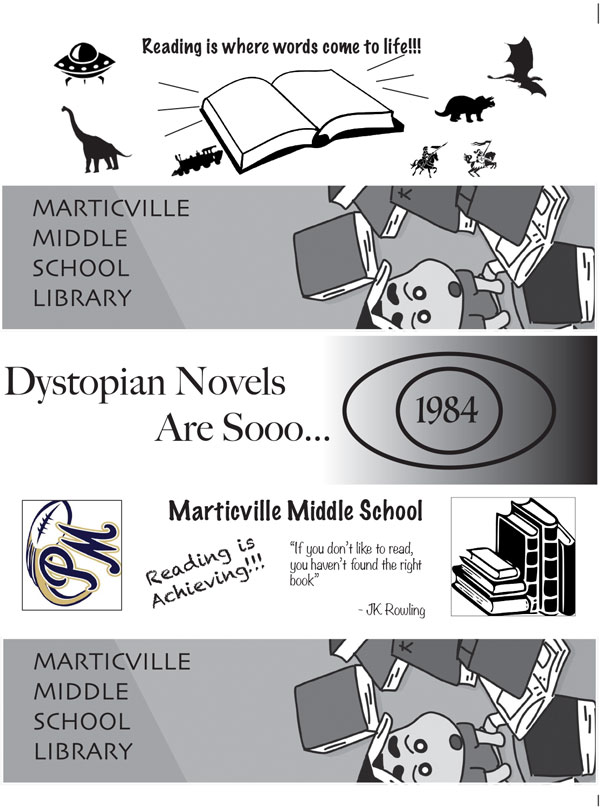

Clay Craig's Print Project for AENG 110 Class |
||
| Home Print Project Photo Project Video Project |  |
For the print project, we made bookmarks for a local Middle School (Marticville Middle) in the Penn Manor School District. To start we sketched multiple different ideas and then decided which one we liked the most. To create the bookmark we used InDesign and grabbed clip art to put on it. For my bookmark (the top one) I grabbed a bunch of different designs from different book themes kids would enjoy reading or things they would enjoy to read about. After our group figured out what designs we all wanted we then put it on a printing plate. After the plate was made we put it in the printing machine to create just about 150 copies of the bookmarks. After they were all printed they were then sent to the middle school. |
| Home Print Project Photo Project Video Project |
© 2023 Clay Craig |